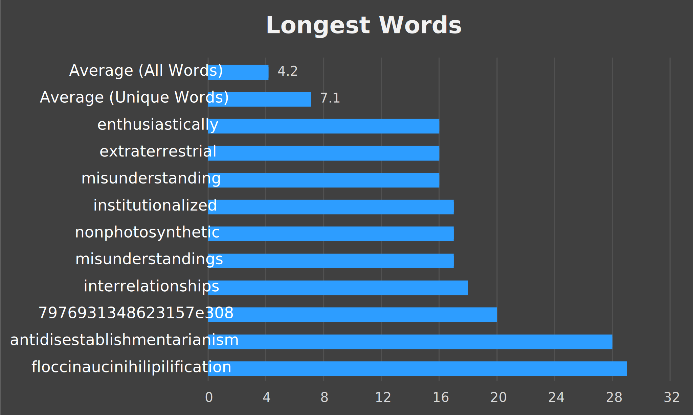
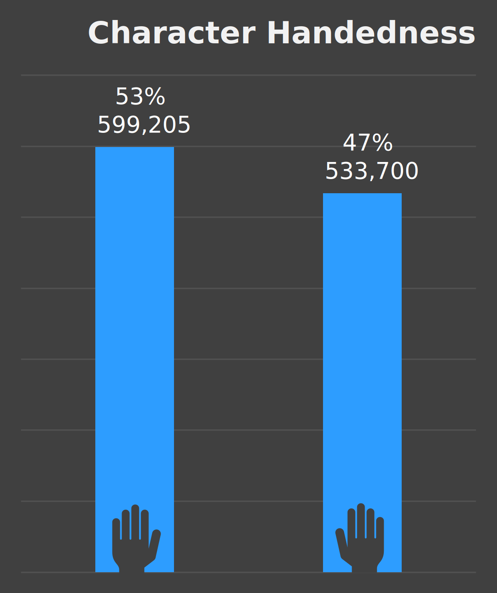

Introduction
This project is an extension and refinement of my first typeracer analysis. While the subject matter is the same, the scope is much more concise: An analysis of the words and characters encountered in my first 5000 typeraces.
English word and character frequencies are well studied. My first exposure to this field was a video on Zipf's Law. For a cursory understanding, here are the wikipedia links to Zipf's Law, and the most common words and letters
Lastly I would encourage you to read this analysis by Peter Norvig. My project serves to explore my data and typing history, but Norvig's analysis is far more enlightening and relevant to the field of quantitative linguistics.
Section 1: Words
First and foremost I will be pretty flexible in what constitutes a word. For the most part, any discrete string of text will be considered a word. Words are words, nominalizations are words, numbers are words, abbreviations are words, and even phoneticizations are words. This relates to the data collection process which is described in section 3.
From 5,000 races I extracted 261,271 words; 13,354 (or about 5%) of which were unique.
The top 74 unique words hold a cumulative 130,716 occurrences. Meaning 0.55% of the unique words account for 50% of all words typed.
Average word length among all words is skewed low because short length words are far more common. The 3 longest words shown below are hardly even words by conventional standards.
My favorite part of this project was investigating word and character handedness. Handedness referring to the ability to type with one hand, or on one side of the keyboard. This measure is slightly problematic since "b" and "6" may be ambidextrous, and all the numbers may be considerd right handed if you utilize the number pad. I split my data according to my personal tendencies, and ignored numeric characters for this part.
Section 2: Characters
From 5,000 races and 261,271 words I extracted 1,389,073 characters.
The tableau chart embedded below lets you compare character categories. You can change how the data is sorted (ascending, descending, alphabetical) with the button on the vertical axis beside "Count."
Character handedness was more evenly distributed. I included all characters except space in this distribution. I almost exclusively hit space with my left thumb, but it was best ommitted since it was so dominant. While the left side holds the two most common characters "e" and "t", the right side contains nearly all the punctuation. I predicted the right characters would hold a greater share, so I was surprised by these results!
Lastly I wanted to see the the correlation each letter had with word length. Half of this report could be on the boxplot below, but a lengthy write up is hard to justify. I will include a few remarks however.
- All letters had a median word length of 6, 7, or 8.
- All of the outliers at 28 or 29 are due to the two longest words: antidisestablishmentarianism and floccinaucinihilipilification. There were 17 unique letters between these two words.
- "a" and "i" are the only letters that are also 1-length words. Moreover, "a" had a much tighter spread than "i"
- While it is inferred from the Longest Words chart above, the lack of words of length 21-27 is curious.
- The biggest loser was "j." It is tied with "k" for having the smallest median word length of 6, but it also has no words longer than 13 characters.
Section 3: The Process
I'd like to use this section to explain the steps of this project at a high level. All my code and data can be found on this repository.
After finishing the very long winded 5,000 Typeraces project I had several more ideas on the topic that I could not justify including. The scope was already too large, and I learned enough from that first attempt to try something new.
The first step was to acquire the raw text from all 5,000 races. This was a great opportunity to learn very basic webscraping. It certainly gets more complicated, but it was very easily done in Python using the BeautifulSoup and Requests modules. I initially tried to scrape the text from the official typeracer website, but it was over 10x faster to get it from typeracerdata.com. This is not surprising at all in hindsight. Additionally, I was likely to run the script more than once, so I included checks to reduce scraping if possible.
There was surprisingly little data cleaning to be done. There were exactly 2 texts that were formatted like poems that included a linebreak or carriage return after each line. They snuck through initial testing, but were eventually found and dealt with.
Slightly more annoying was properly dividing the raw texts into words. From the beginning I knew this would be impossible to perfect. Abbreviations, phoneticizations, numbers, and obscure proper nouns were most of the problem. Here are some examples of problematic phrases: U.S.A, 'don't', there're, N'yn, 3-2-1, -5e-324, and 7976931348623157e308. The last two caused me some problems before I found out they were indeed from this race. Words surrounded by apostrophes were not uncommon, and they were not easily distinguished from legitimate words starting or ending with an apostrophe. I did not toil over this seemly endless problem for too long. Instead, I let RegEx split words as simply as it could, and then I added some catches for those that slipped through the cracks. Unforunately, this mean't U.S.A would be split into U, S, and A, but I do not believe it significantly degraded the quality of my data. Besides, there is an argument to be made on how U.S.A or -5e-324 should be categorized to begin with.
Now I had a dictionary with all the typeracer data I would need. My other scripts helped to extract, transform, and organize it to be usable in Excel and Tableau. There's some outputs that didn't get used at all. For example, I counted capitazlied letters before I transformed everything to lowercase. About 25% of alphabetical letters were capitalized, if you were wondering. There's lots of work in the excel sheets that were not fit for presentation for one reason or another.
I once again used Excel for reportable information and several of the charts. I've come to like using Excel, and there's lots still to learn. New this time around was the use of Tableau. While I am familiar with the fundamentals (SQL Joins, sheets and dashboard, fields), navigating the app has been quite an experience. And it absolutely needs a dark mode. Nonetheless it is extremely effective. It would have been 10x the work to create the boxplot in Excel. Finally, I am incredibly grateful that tableau was easy to embed in this site. Although, I figured the boxplot would be overly cumbersome to embed, so I uploaded it as a picture instead. These visualizations are pretty novice, but you can find them here.
In hindsight, the #1 thing I would change would be to add category fields to the characters and words. If they were categorized as ambidextrous, left, or right, I could have done such analysis better, cleaner, and faster.